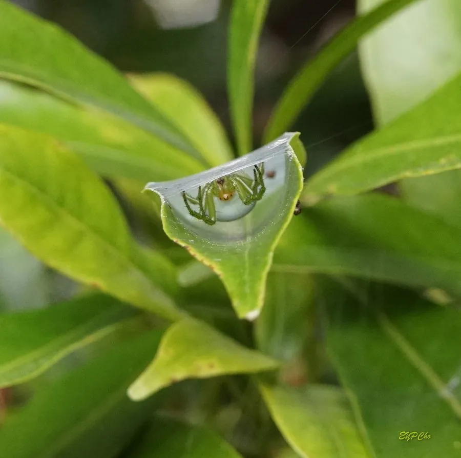

蛛形动物 · 动物界
五纹园蛛 Araneus pentagrammicus

东亚常见的园蛛，腹部背面有五个浅色斑点组成的图案，常在树间和屋檐下结圆网，捕食蚊蝇等飞虫，对人无害。
- 分类
- 门节肢动物门纲蛛形纲目蜘蛛目科园蛛科属园蛛属
- 栖息环境
- 树林、果园、灌丛和房屋附近，在树间或屋檐下结网
- 地理分布
- 中国、日本和朝鲜半岛
- 保护级别
- IUCN 暂无评估；中国未列入国家重点保护名录
物种志
五纹园蛛雌蛛体长 8–12 mm，雄蛛 4–6 mm，腹部呈卵圆形，体色黄褐或灰褐，背面有五个浅色斑点，排列成近似五角星的图案，因此得名；头胸部有深色纵纹，八足细长并有刺毛。
它分布在中国、日本和朝鲜半岛，栖息于树林、果园、灌丛和房屋附近，多在树间、屋檐和栏杆之间结圆网，黄昏后到网中央等待猎物，捕食蚊、蝇、蛾类等飞虫。雌蛛产下卵囊，悬挂在网附近的枝叶或缝隙中，幼蛛孵化后经几次蜕皮逐渐长大。五纹园蛛毒性弱，对人基本无害，是庭院和果园里常见的益虫；白天多躲在网边的叶背或缝隙中，它的网每天可能修补或重结。目前 IUCN 暂无评估，中国未列入国家重点保护名录。
形态与习性
- 食性蚊、蝇、蛾类等飞行昆虫
- 体长雌蛛 8–12 mm，雄蛛 4–6 mm
- 识别腹部背面有五个浅色斑点
- 网型树间或屋檐下的圆网
- 习性白天躲在网边，黄昏到网中央守候
- 毒性毒性弱，对人基本无害
趣味知识
- 五纹园蛛腹部有五个浅色斑点，排成近似五角星的图案。
- 它常在屋檐和树间结网，是东亚庭院里常见的蜘蛛。
- 白天它躲在网边的叶背或缝隙里，黄昏才回到网中央。